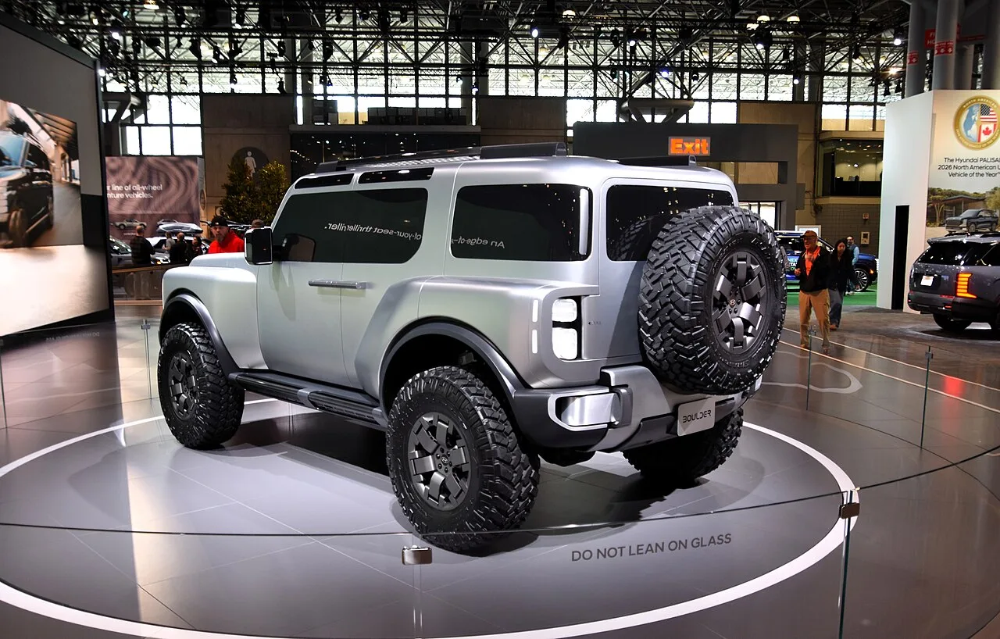
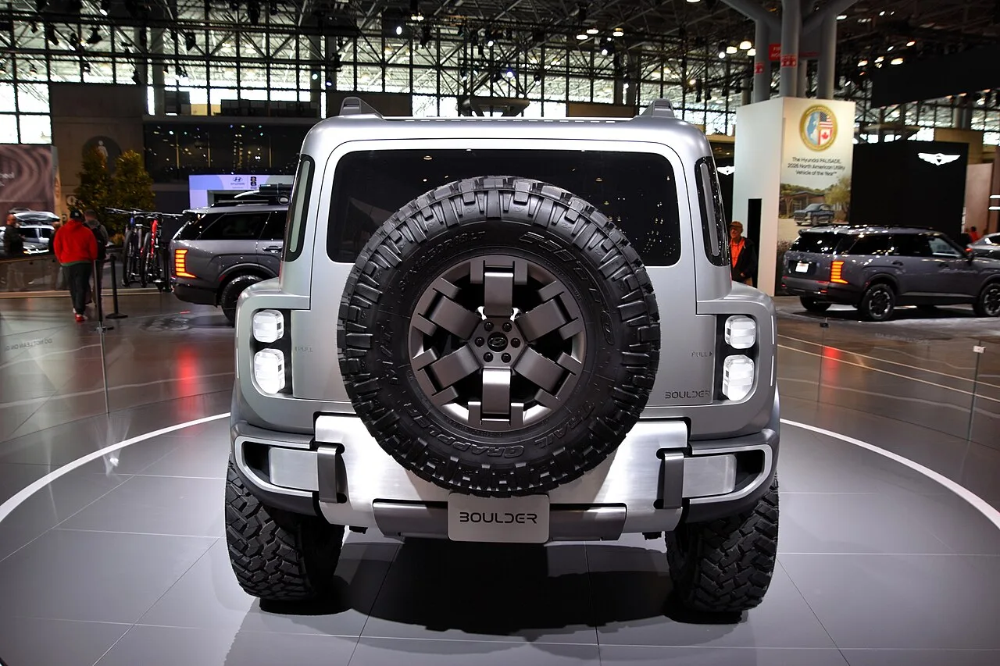

▲ 2026 뉴욕 오토쇼에 전시된 현대 볼더 콘셉트. 범퍼에 'BOULDER' 배지가 붙어 있다 ⓒ Wikimedia Commons
1. 특허 도면으로 먼저 나왔다
현대차 볼더의 양산형 모습이 인도 특허 출원 도면을 통해 드러났습니다. 볼더는 현대차가 준비 중인 정통 오프로더입니다.
특허 도면이 중요한 이유가 있습니다. 제조사는 양산 전에 디자인을 법적으로 보호해야 하고, 그 과정에서 실제 생산될 형상이 문서로 남습니다. 콘셉트카 사진보다 오히려 양산형에 가까운 정보인 경우가 많습니다.
다만 특허 도면에는 색도 재질도 없습니다. 선으로만 남은 형상이라, 여기서 읽을 수 있는 것은 비율과 구성 요소입니다.
2. 도면이 보여준 얼굴
전면은 수평형 패널 구성입니다. 그 안에 작은 사각형 헤드램프가 들어가고, 세로형 주간주행등이 배치됐습니다.
이 조합은 최근 오프로더의 문법을 따릅니다. 램프를 작게 만들면 파손 위험이 줄고, 교체 비용도 내려갑니다. 수평 패널은 정면 면적을 크게 보이게 해 존재감을 만듭니다.
대형 그릴과 견인 고리, 스키드 플레이트도 확인됩니다. 견인 고리와 스키드 플레이트는 장식이 아니라 기능 부품입니다. 차체 하부를 보호하고 견인 시 힘을 받는 지점이라, 이런 부품이 도면에 있다는 것은 실제 오프로드 사용을 상정했다는 뜻입니다.

▲ 볼더 콘셉트의 후측면. 사이드 스텝, 루프 랙, 테일게이트 스페어 타이어가 모두 기능 부품으로 배치됐다 ⓒ Wikimedia Commons
3. 37인치, 지름 94cm가 바꾸는 것
콘셉트카에 달린 타이어는 37인치, 지름 약 94cm입니다. 일반적인 SUV 타이어가 30인치 안팎인 것과 비교하면 한 체급 이상 큽니다.
타이어가 커지면 차 전체가 달라집니다. 지상고가 올라가고, 접근각과 이탈각이 좋아지며, 바위를 타고 넘는 능력이 향상됩니다. 오프로더에서 타이어 크기는 옵션이 아니라 성능 그 자체입니다.
대신 대가가 따릅니다. 회전 관성이 커져 가속과 제동이 둔해지고, 연비가 나빠집니다. 무게 중심도 올라가 온로드 조종성이 떨어집니다. 그래서 양산형에서 이 크기가 그대로 유지될지는 별개의 문제입니다.
특허 도면에서 확인할 것이 바로 이 지점입니다. 도면상의 휠 아치 비율이 콘셉트와 얼마나 다른지가, 양산형이 얼마나 현실적으로 조정됐는지를 알려 줍니다.

▲ 테일게이트에 그대로 걸린 스페어 타이어. 이 크기의 타이어는 트렁크 바닥에 넣을 수 없어 밖으로 나온다 ⓒ Wikimedia Commons
후면 사진이 이 문제를 그대로 보여 줍니다. 스페어 타이어가 테일게이트 바깥에 걸려 있습니다. 이 크기의 타이어는 차체 안에 수납할 방법이 없기 때문입니다. 타이어를 키운다는 결정 하나가 뒷문 구조와 무게 배분까지 바꿔 놓는다는 뜻입니다.
4. 예상 파워트레인은 두 갈래
동력계는 아직 확정되지 않았습니다. 북미 시장 후보로 거론되는 것은 두 가지입니다.
| 구성 | 예상 출력 |
|---|---|
| 2.5L 터보 하이브리드 | 약 333마력 |
| 플러그인 하이브리드 | 400마력 안팎 |
| 2.2L 디젤 | 약 209마력 |
2.2리터 디젤이 후보에 들어 있다는 점이 흥미롭습니다. 승용 시장에서는 사실상 퇴장한 연료지만, 오프로더와 견인 용도에서는 저회전 토크와 연료 효율 때문에 여전히 수요가 남아 있습니다. 시장별로 다른 파워트레인을 얹겠다는 신호로도 읽힙니다.
순수 전기차가 후보에 없다는 점도 중요합니다. 오프로드 주행과 견인은 전기차의 주행거리를 급격히 깎아먹습니다. 오지에서 충전 인프라를 기대하기도 어렵습니다. 이 세그먼트에서 하이브리드와 PHEV가 우선 검토되는 이유입니다.
2.5L 터보 하이브리드는 이미 그룹 내에 있는 조합입니다. 새로 개발하지 않아도 되는 만큼 실현 가능성이 높은 후보입니다.
5. 차동잠금과 저속 기어
구동 방식으로는 사륜구동에 전후 차동기어 잠금장치, 저속 기어가 예상됩니다.

▲ 참고 이미지 — 포드 브롱코. 차동잠금과 저속 기어를 갖춘 정통 오프로더의 대표 사례다 ⓒ Wikimedia Commons
이 세 가지는 세트로 움직입니다. 저속 기어는 낮은 속도에서 큰 토크를 만들어 바위나 급경사를 오를 때 쓰고, 차동잠금은 한쪽 바퀴가 떠도 반대쪽에 힘을 보냅니다. 전자식 주행 모드로 흉내 낼 수 있는 영역이 아니라 기계적 장치입니다.
이 사양이 들어간다면 볼더는 '험로 주행 가능한 SUV'가 아니라 '오프로더'로 분류됩니다. 브롱코, 랭글러, 4러너와 같은 칸에 놓인다는 뜻입니다.

▲ 참고 이미지 — 토요타 4러너. 볼더가 들어가려는 세그먼트의 기존 강자다 ⓒ Wikimedia Commons
6. 어디서 만들고, 국내엔 오나
생산지로는 미국 조지아주 메타플랜트가 거론됩니다. 현재 아이오닉 5와 아이오닉 9을 만드는 공장입니다.
다만 확정된 것은 하나도 없습니다. 원문 표현을 그대로 옮기면 "미국 조지아주 메타플랜트 생산 가능성이 거론되지만 생산 공장과 출시 시점, 판매 지역은 아직 발표되지 않았다"입니다. 파워트레인도, 공장도, 시점도 모두 미정 상태에서 디자인만 먼저 확정된 셈입니다.
국내 판매 여부도 정해지지 않았습니다. 판단을 어렵게 만드는 요소가 몇 가지 있습니다.
첫째, 크기와 타이어입니다. 37인치 타이어를 그대로 쓴다면 국내 도심에서는 주차와 운용이 만만치 않습니다. 지하주차장 높이 제한에 걸릴 가능성도 있습니다.
둘째, 수요층입니다. 국내에서 차동잠금과 저속 기어를 실제로 쓰는 사용자는 많지 않습니다. 반면 이런 사양은 값을 올립니다. 안 쓰는 기능에 돈을 내는 구조가 됩니다.
셋째, 미국 생산이라는 조건입니다. 조지아에서 만들어 국내로 들여오면 운송비와 관세가 붙습니다. 국내 가격이 북미보다 높게 형성될 가능성이 큽니다.
정리하면 이렇습니다. 특허 도면이 확인해 준 것은 볼더가 실제로 만들어지고 있다는 사실입니다. 남은 질문은 콘셉트의 37인치 타이어가 양산형에서 몇 인치로 내려앉느냐이고, 그 숫자가 이 차의 성격을 최종적으로 결정합니다.